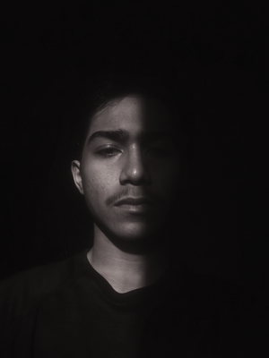

Bingung mulai belajar coding? Sendirian gampang nyerah?
Forum belajar CLI, Git, & AI coding gratis untuk mahasiswa — dari 0 sampai bisa bikin website & aplikasi mobile pake AI. Langsung praktek, tanpa PPT, tanpa biaya.
The Penguin Circle adalah forum belajar teknologi CLI, Git, jaringan, dan AI coding yang didesain khusus untuk mahasiswa dari 0. Diinisiasi oleh Divisi Kemahasiswaan TRM 2026/2027, Circle ini adalah antitesis dari seminar formal — kita belajar lewat terminal, langsung praktek, tanpa PowerPoint, tanpa teori mengawang-awang.
Filosofinya sederhana: coding itu skill, bukan teori. Makanya setiap pertemuan kita cuma ngelakuin 3 hal: dengerin penjelasan singkat (15 menit), praktek bareng (60 menit), dan tanya jawab (15 menit). Duduk di Lab Komputer, buka terminal, masing-masing di PC, dan belajar bareng. Kayak ngulik bareng temen, tapi terstruktur.
Target kita: di akhir 8 segmen, peserta bisa navigasi Linux tanpa mouse, push project ke GitHub, remote server pakai SSH, dan bikin website & aplikasi mobile cuma pake prompt AI. Semua dari 0, tanpa biaya.
Nggak perlu latar belakang IT. Pertemuan pertama mulai dari ls dan cd.
5 segmen CLI core + 3 segmen AI & project. Setiap segmen 4 pertemuan + 1 project. Plus 3 bulan buffer.
Nggak ada biaya pendaftaran, nggak ada iuran, nggak ada biaya tersembunyi. Tinggal dateng.
Semua project di WSL Ubuntu, satu device. Kalo terkendala, PC lab siap dipake.
Ada mentor & 6 asisten yang siap bantu satu-satu. Nggak ada yang ditinggal sendirian.
Phase 2 bikin web (Laravel/Next.js) & mobile (Flutter) beneran dibantu AI CLI.
Banyak cara belajar coding. Tapi nggak semuanya cocok buat mahasiswa yang mulai dari 0 dengan budget 0.
Bootcamp programming minimal 3-15 juta. Circle ini gratis. Materi yang diajarkan bahkan lebih relevan buat 2026: CLI + AI coding.
Kuliah IT kebanyakan teori dan algoritma. Circle ini 100% praktek. Minggu pertama lo udah bisa pake terminal, minggu ketiga udah Git push.
Otodidak itu keras: lo stuck, nggak tau tanya siapa. Di Circle ada mentor + 6 asisten yang siap bantu kapan aja.
Kebanyakan orang cuma nonton tutorial tanpa pernah bikin. Circle punya 8 project wajib — dari misi CLI sampe aplikasi mobile beneran.
2026: developer yang nggak pake AI bakal ketinggalan. Circle ngajarin AI CLI tools (opencode, ollama) dari awal.
Nggak ada seragam, nggak ada absen kaku, nggak ada PPT membosankan. Belajar sambil ngopi, santai, tapi deliverable jelas.
| Aspek | The Penguin Circle | Bootcamp Berbayar | Belajar Otodidak | Kuliah IT |
|---|---|---|---|---|
| Biaya | ✓ Gratis | ✗ Rp 3-15 juta | ✓ Gratis | ✗ Puluhan juta |
| Dari 0 | ✓ Ya | ✓ Ya | ✗ Tersesat | ✗ Butuh adaptasi |
| Praktek Langsung | ✓ 100% | ✓ 70% | ✗ Tergantung | ✗ 20-30% |
| Project (Portfolio) | ✓ 8 project | ✓ 2-5 project | ✗ Jarang | ✗ 1 skripsi |
| AI Coding | ✓ Termasuk | ✗ Jarang | ✗ Sendiri cari | ✗ Belum ada |
| Mentor & Asisten | ✓ 1 mentor + 6 asisten | ✓ Ada | ✗ Tidak ada | ✗ Dosen (terbatas) |
| Fleksibel | ✓ Boleh cabut kapan aja | ✗ Ikat kontrak | ✓ Terserah | ✗ Wajib hadir |
Kurikulum didesain bertahap: dari navigasi terminal paling dasar sampe bikin aplikasi mobile pake AI. Setiap segmen: materi → praktik → project video. Nggak ada ujian, nggak ada tugas deadline — yang ada cuma progress dan portfolio.
pwd, ls, cd), bikin folder & file (mkdir, touch), hapus & pindahin (cp, mv, rm), wildcard. ⚠ Khusus WSL: langsung praktik bikin folder sendiri (karena WSL fresh install gak punya Downloads/Pictures).nano, baca file (cat, less, head, tail), olah data (wc, sort, uniq). Dua minggu terakhir: cari file (find, locate), cari teks (grep), potong & ganti teks (cut, tr, diff).sudo), hak akses file (chmod, chown), manajemen proses (ps, kill, htop). Dua minggu terakhir: package manager (apt, brew), download (wget, curl), tools multimedia (ffmpeg, imagemagick).ping), cek IP (ip addr), transfer file (scp), remote server (ssh), dan bikin kunci SSH biar login tanpa password. Skill wajib developer modern — lo bakal pake ini tiap hari kalo udah kerja di tech.init, add, commit, branch, checkout, push, pull, clone. Konekin repo lokal ke GitHub — skill wajib buat backup project, kerja tim, dan nunjukin portfolio ke calon employer.rancangan_project.md, mockup, user flow). Dua minggu terakhir: eksekusi web pake AI CLI — setup Laravel/Next.js, generate komponen, debugging. Lo cukup ngomong, AI yang nulis kodenya.pesan_untuk_angkatan_selanjutnya.txt.Navigasi file system tanpa mouse • Edit teks dari terminal • Cari file & teks pake grep/find • Atur permission file • Install software lewat terminal • Tes jaringan & remote server • Git push project ke GitHub
Pake AI CLI buat bantu coding • Nulis prompt efektif • Merancang project dari 0 • Bikin website pake AI • Bikin aplikasi mobile pake AI • Siap jadi developer modern dengan bantuan AI
Kelas pengganti (jika ada pertemuan miss karena libur/ujian/lomba) • Proker turunan Divisi Kemahasiswaan • Penelitian & lomba mentor • Dokumentasi akhir & closing circle
Circle ini diinisiasi dan dijalankan oleh Divisi Kemahasiswaan TRM 2026/2027. Mentor utama sekaligus pendiri adalah Mu'adz Hudzaifah, dibantu 6 anggota divisi yang bertindak sebagai asisten praktik dan co-mentor.

15.30 — 17.00 WIB
Tersedia PC masing-masing, tinggal dateng
Mahasiswa PDBI — dari 0
Bawa laptop wajib (WSL Ubuntu). Kalo terkendala, PC lab siap dipake.
Kumpulan video tugas peserta dan foto dokumentasi selama pembelajaran CLI, Git, dan AI coding di The Penguin Circle.
Video tugas Segmen 1 — CLI navigasi & file management
Video tugas Segmen 2 — text editor & manipulasi teks
Video tugas Segmen 3 — grep & find di terminal
Jumat, 12 Juni 2026 — Lab Komputer
Segmen 1 — Minggu 1: ls, cd, pwd
Suasana Circle — Santai tapi fokus
Masih ragu? Mungkin jawabannya ada di sini:
ls dan cd. Nggak perlu latar belakang IT sama sekali. Anggota divisi juga siap bantuin lo satu-satu kalo ada yang bingung.Dateng aja Jumat, 12 Juni 2026 di Lab Komputer, 15.30 WIB. Bawa laptop — wajib (WSL Ubuntu). Kalo terkendala, PC lab siap dipake. Kalo nggak cocok, lo bebas cabut — nggak ada yang nahan. Tapi gue yakin bakal betah, karena di sini lo nggak belajar sendirian.
Daftar Gratis Sekarang